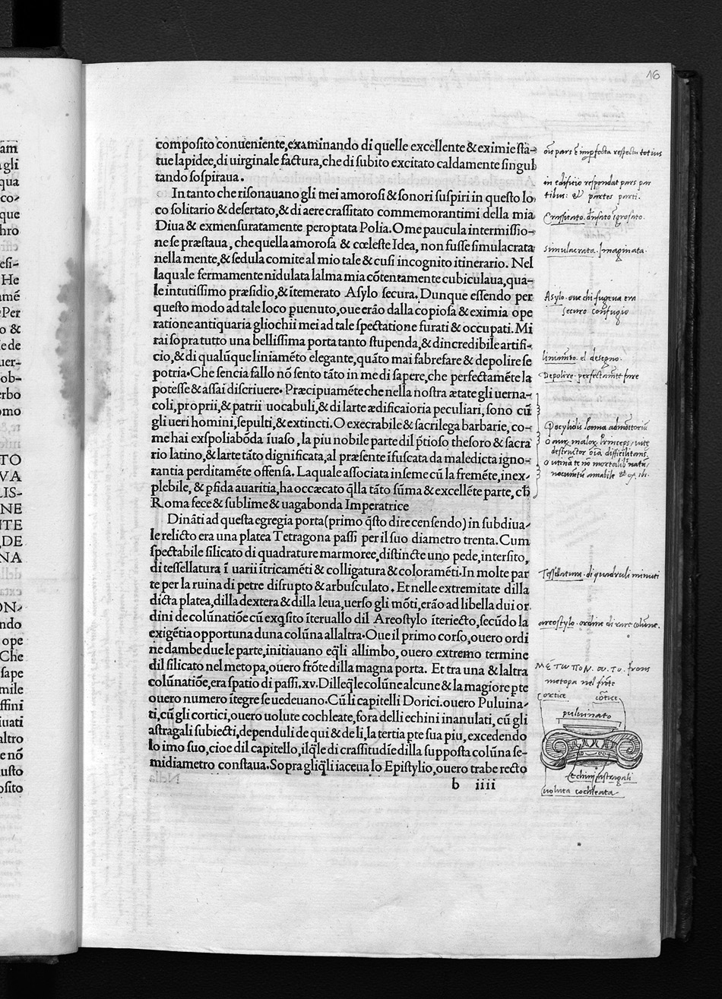
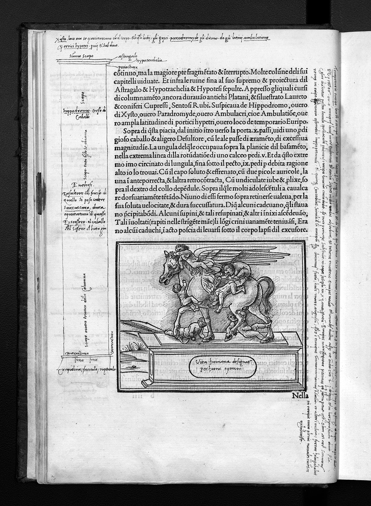

← All Folios
Signature b8r
Folio 16r, Quire b

Biblioteca degli Intronati, Siena — O.III.38
HIGH Unverified

Biblioteca degli Intronati, Siena — O.III.38
HIGH Unverified
Vision Reading (Phase 3 deep analysis)
Primary hand: Multiple (at least 2) · Hands: 2 · Type: woodcut_page · Sig: b8r
Woodcut: Hieroglyphic frieze with multiple emblematic scenes
Two-register hieroglyphic panel. Top register: chariot scenes, winged figure, animals. Bottom register: dolphins, anchor, winged figures, vessels. These are Colonna's invented hieroglyphs — pseudo-Egyptian emblems that the HP presents as ancient wisdom. Below: Latin inscription in majuscule capitals.
EX LABORE DEO NATVRAE SACRIFICA LIBERA LITER... PAVLATIM REDVCES... TENERI TANCIOLV MEMQVE SERVABIT
Condition: Good. Clear impression
Transcription Attempts
top_right · English · HIGH
Hyra glyphs
Reader has written 'Hyra glyphs' (i.e., hieroglyphs) at top right. Clear English label. Spelling variant of 'hieroglyphs' consistent with 16th-17th c. English
right_margin · Latin · LOW
[...] descr[...] [...] pt [...]
Small annotations at right, partially cropped
bottom · English · MEDIUM
hieroglifica[...] literally to ye [...] of nature of the [...] [...] Spirits [...] spirit to live [...] who by this [...] rule [...] of the left [...] and in his [...] Generousnesse [...] always keep [...] fast [...] Capt. 1
KEY ENGLISH ANNOTATION: A reader has provided an English translation/interpretation of the hieroglyphic inscription. The word 'Spirits' and the reference to 'nature' suggest this reader may also be reading alchemically. 'Capt. 1' at end may mean 'Chapter 1' — a structural note
right_of_woodcut · n/a · n/a
[geometric diagram — grid pattern with dots]
Reader has drawn a geometric grid/matrix diagram in the right margin next to the hieroglyphic panel. This may be an attempt to decode or systematize the hieroglyphic symbols
Symbols Detected
reader_drawn_diagram · right_margin
Geometric grid pattern with dots/points at intersections. Approximately 5x5 grid. May be a combinatorial or decoding diagram
Scholarly Significance
This page captures active decipherment. The English reader is attempting to translate Colonna's pseudo-hieroglyphs, while the geometric grid in the margin suggests a systematic decoding attempt. The word 'Spirits' in the English annotation is particularly interesting — if this reader is interpreting the hieroglyphs through a spiritual/alchemical lens, this extends the alchemical reading beyond Hand B to at least one English-language reader. The spelling 'Hyra glyphs' is an early English vernacular spelling.
Cross-references: Russell thesis Ch. 4 (hieroglyphic inscriptions), Photo 45 (p.32, geometric diagram), Photo 46 (p.33, geometric diagram)
Note (hand_identification): The English annotations may belong to Thomas Bourne (1641) or another English reader. Russell should clarify which hand writes the English translations.
Vision reading (Claude Code, Phase 3)
Annotations
CROSS_REFERENCE (1)
Cross Reference
174
Detail, (b8r)
Alchemical Annotations
In common with the second reader of the BL copy, E inferred an alchemical subtext to the
HP. Though Béroalde de Verville’s 1600 alchemical edition is not directly cited by E or any
other annotator, given the French provenance of this present copy, and the probable late-
seventeenth to early-eighteenth-century dating of the hands, this hand is even more likely to
have been exposed to Béroalde than the BL annotator, or at least to related dis...
Russell, PhD Thesis, p. 185 (Ch. 7)
Cross Reference
174
Detail, (b8r)
Alchemical Annotations
In common with the second reader of the BL copy, E inferred an alchemical subtext to the
HP. Though Béroalde de Verville’s 1600 alchemical edition is not directly cited by E or any
other annotator, given the French provenance of this present copy, and the probable late-
seventeenth to early-eighteenth-century dating of the hands, this hand is even more likely to
have been exposed to Béroalde than the BL annotator, or at least to related dis...
Russell, PhD Thesis, p. 185 (Ch. 7)
Cross Reference
174
Detail, (b8r)
Alchemical Annotations
In common with the second reader of the BL copy, E inferred an alchemical subtext to the
HP. Though Béroalde de Verville’s 1600 alchemical edition is not directly cited by E or any
other annotator, given the French provenance of this present copy, and the probable late-
seventeenth to early-eighteenth-century dating of the hands, this hand is even more likely to
have been exposed to Béroalde than the BL annotator, or at least to related dis...
Russell, PhD Thesis, p. 185 (Ch. 7)
Cross Reference
174
Detail, (b8r)
Alchemical Annotations
In common with the second reader of the BL copy, E inferred an alchemical subtext to the
HP. Though Béroalde de Verville’s 1600 alchemical edition is not directly cited by E or any
other annotator, given the French provenance of this present copy, and the probable late-
seventeenth to early-eighteenth-century dating of the hands, this hand is even more likely to
have been exposed to Béroalde than the BL annotator, or at least to related dis...
Russell, PhD Thesis, p. 185 (Ch. 7)